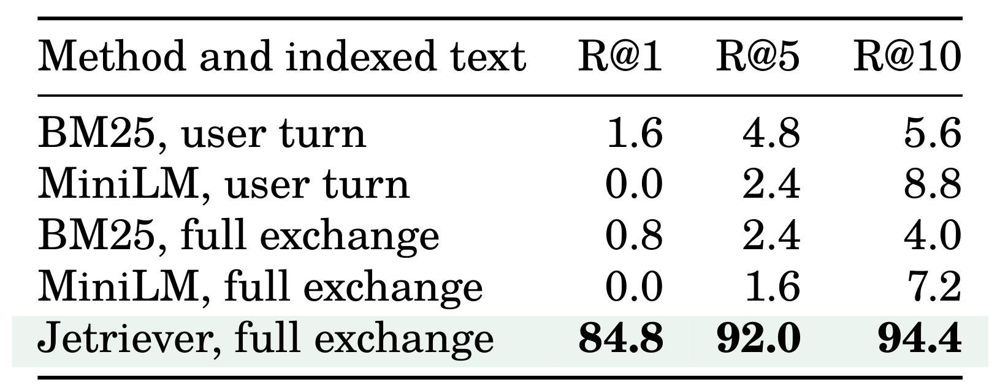
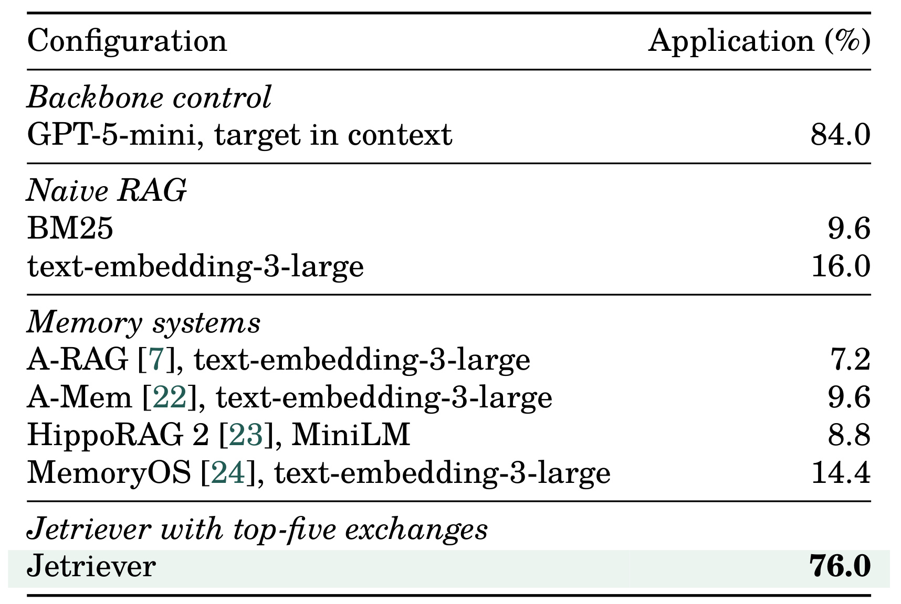
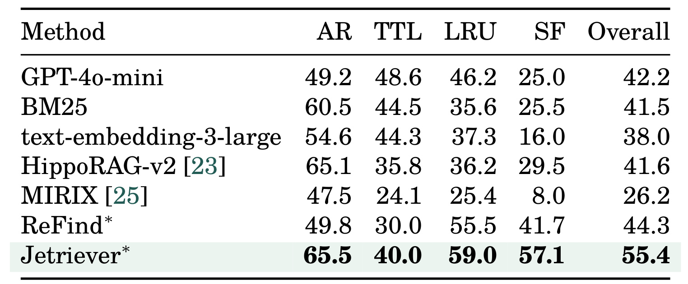
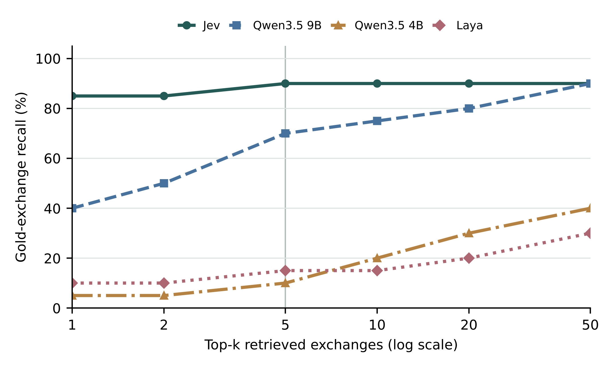
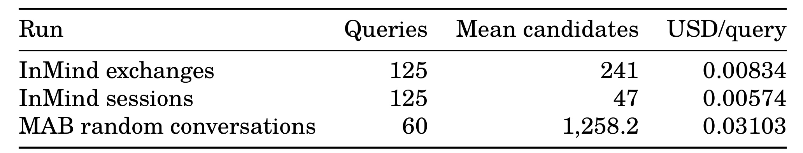
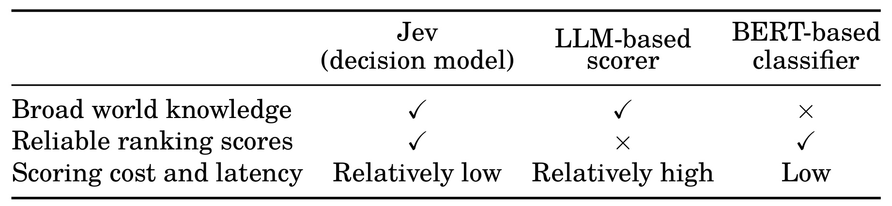

Jetriever：把 Agent 记忆检索从相似度转向效用
Jetriever: Shifting Agent Memory Retrieval from Similarity to Utility 由中国科学技术大学的 Ruizhe Li、Licheng Zhang、Mingxuan Du、Zhendong Mao 撰写，讨论一个具体的记忆入口问题：已经存在于历史中的个人事实，如何在当前问题没有复述它时仍被送到回答模型。论文首次提交 arXiv 的时间为北京时间 2026 年 11 月 17 日 01:50，封面“4 November 2026”是研究稿日期，不能替代首次公开时间。论文入口：arXiv:2611.21478。作者仓库 本轮已访问，未复现实验，也未调用 Jev API 验证其服务表现。
有用的记忆未必与它帮助回答的问题相似。即使回答阶段的大模型具备所需常识，它也无法利用被检索阶段遗漏的个人事实；先猜查询扩展再检索，仍可能错过未被想到的隐含关联。
1. 背景和问题
个人记忆系统通常先将历史对话切片，或把对话提炼成事实，再借助词法或向量检索选择一小部分内容送给回答器。这个链路默认当前问题与有用记忆之间存在可检索的表面线索：用户问住在哪里，包含居住地的记录往往也有地名或相关实体；用户要求继续上次的项目，项目名可以连接前后对话。对于这类显式召回，文档与查询的相似度是合理信号，直接检索原始对话也可能很好。Jetriever 并没有用一个特设困难任务否定全部相似度检索，而是追问它在另一类问题上为什么会系统性漏掉重要条件。
论文用 InMind 的隐含关联任务刻画这个缺口。历史中存有坚果过敏，当前用户问马卡龙食谱；知道马卡龙通常使用杏仁粉，才会判断这条个人事实与回答有关。记录了家中有百合，后来咨询养猫，所需连接则涉及百合对猫的危险。这里的相关性跨越了“个人事实—通用世界知识—当前行动”三部分。查询与事实可能没有共同实体，普通文本相似度看不出桥梁；事实本身却不是无关信息。论文中的例子用于说明任务结构，不能当作本笔记提供的医学或动物健康指导。
这与把事实存坏、把事实忘掉有区别。一个系统可能准确提取过敏事实，在用户直接询问“我对什么过敏”时也能回答，但在咨询食谱时没有激活这条记录。前两步说明事实存在并可以被直接检索，仍不足以证明它会在需要时主动参与决策。论文从这一点解释原 InMind 的控制：直接把决定性事实放进上下文后，回答器的 Application 可达到 84.0%；多种既有记忆链路的端到端表现低得多。该比较提示了入口瓶颈，但不同记忆系统还具有提取、切片及回答阶段差异，不能把所有误差都严格归因到一个相似度函数。
让大模型先改写查询也不自动消除问题。Agent 可以使用自身常识生成多个搜索词，例如由养猫想到有毒植物；然而，它在没看到真实记忆前必须先猜中应搜索的关联。个人历史可能包含宠物、家庭成员、器材、工作、出行等大量约束，查询扩展无法穷尽所有潜在连接。只要决定性事实没有进入返回结果，回答器即使知道相关常识也无从应用。Jetriever 因而调转推理顺序：不先发明所有可能的搜索入口，而是直接检查记忆池中已经存在的每一条候选，判断它对当前回答有没有贡献。
这种调转将研究对象从一个向量空间扩展为查询与具体记忆的联合判断。问题不是能否给出一段听起来合理的解释，而是能否为数百或数千条记录产生足够可区分的排序信号。一个聊天模型可能具有广泛常识，却把很多“或许有关”的记录都判为有用，导致真正决定答案的记录仍然落不到前几位。相反，一个成本低、输出稳定的分类器，如果缺少将两个领域连接起来的知识，也可能从一开始就看不出关联。作者把世界知识、评分区分能力和可承担的全池开销列为三项同时需要的条件。
论文采用的 Jev 是基于大模型的决策模型，以结构化判断和概率作为输出，而不是生成自由文本解释。其训练方法 RLCD 来自外部模型工作，Jetriever 本身没有重新训练一个专门的记忆检索器，也没有提出新的概率校准损失。阅读时应将“作者选择一个现成决策模型”与“作者证明某种校准训练普遍更好”分开。本文的直接证据主要来自具体排序、回答效果和 API 费用；对校准的机制性解释具有合理性，但没有可靠性曲线或同架构训练消融来完全隔离校准、预训练常识和模型能力。
全池评分解决了相似度首阶段丢失的风险，也把规模问题摆到了台面上。对每个问题都检查所有记录，开销随候选数量及长度增加；它不是一个可以免费替换近似最近邻索引的接口。短交换和长会话即便数量相近，输入 token、可见个人事实和噪声密度也不相同。论文因此同时测试交换与会话粒度，并报告一个平均候选数远高于中位数的 MAB 样本。这里最值得研究的不是某个单点成本看起来便宜，而是全池收益在什么规模与延迟预算内成立。
对个性化推荐或用户记忆，这个问题可迁移为“当前任务没有显式提及的长期约束，是否仍能进入候选”。例如长期偏好可能影响一次临时请求，但名称或主题不相近；单纯用当前文本检索历史容易遗漏。论文没有实测推荐点击率，也没有建立将效用分数直接加进排序模型的方案。可以借鉴的是验证顺序：先固定真实记忆池和正确证据，再测证据能否排进上下文预算，最后让同一个回答器使用它；不要仅用最终成功率替代对记忆入口的检查。
研究稿的定位也应保守。作者明确将其作为探索性的系统实验，不宣称显著的方法学创新。它的价值在于用相同候选对照展示隐含关联的失效，拆开深召回与首位排序，并诚实报告抽样、历史基线和费用限制。相应地，若要据此设计生产系统，应先确认自己的查询中确实有这类隐含关联需求，再测候选池增长后的质量与开销曲线。原论文的数百候选实验提供了方向，尚未回答大型长期记忆库、持续更新和线上尾延迟的全部问题。
论文对历史方法的介绍还提醒了一个容易忽视的基线问题。它引用的 ReFind 全六子任务比较中，单次 BM25 已有较强宏平均，Agent 自主搜索又进一步提高；RAW-RAG 在其他基准也显示原始对话加检索足以竞争复杂记忆结构。这些是被引用工作的结果，不是本文重新验证的实验。它们与 InMind 的相似度失败并不矛盾，因为任务是否提供显式检索线索不同。因此，这篇论文更适合提出分层评估：显式问题、隐含关联问题与依赖多条证据的问题分别测量，才能判断全池效用带来的是针对盲区的增量，还是在全部工作负载上都能成立的收益。
2. 方法
2.1 从相似度入口转向逐条效用判断
Jetriever 的最小输入是当前查询与一条真实候选记忆。针对 InMind，判断标准要求这条记忆是否包含给出正确、个性化回答所需要的个人信息，包括间接相关的信息；针对更广的 MAB 任务，则询问候选是否提供正确回答必需的事实或支撑。两种提示都将注意力放在“这条候选贡献什么”，而不是仅检查它与问题是否提及同一主题。系统把每条候选单独交给 Jev，因而不要求模型在一次长上下文里同时搜遍全部历史，也不让某条候选的得分借用其他个人记忆中的事实。
这里并不禁止模型使用世界知识。相反，世界知识正是发现隐含关联的桥梁；禁止的是在判断候选贡献时凭空借入另一条私人记录。这个边界很关键：若一条记忆仅记录家庭植物，评分器可以借助常识判断当前养宠问题是否需要考虑它，但不能假设用户还说过某种疾病或家里已有某种动物。这样的单候选接口便于独立并发，也使每条排序分数都对应一个明确输入。然而，它无法直接表达两条分别不充分、合在一起才必要的记忆之间的互补性，原论文没有给出成组选择或去冗余的优化目标。
本文没有训练新的检索模型；它改变的是检索时的判别问题。 Jev 的输出是二元 Noul 判断的决策分数，不向回答器交付自由文本理由。Jetriever 直接把该分数当排序信号，绕过词法或向量首阶段过滤。作者将这种方式称为完整重排：对池中全部候选独立评分，而不是先用相似度保留一小批再重排。使用便宜决策模型的目的，是让逐条全池扫描在研究规模上可承担；这与对一个预筛后的 Top100 候选运行强模型有本质不同，后者无法恢复预筛时已经消失的记忆。
2.2 固定候选、确定性排序与回答接口
给定全部分数后，原文用下面的排序规则和集合定义输出记忆：
符号解释：$q$ 是当前查询，$m_i$ 是第 $i$ 条候选记忆，$s(q,m_i)$ 是 Jev 对这对输入返回的效用分数；$\operatorname{id}(m_i)$ 是稳定候选标识，$\pi_q$ 表示按分数降序、再按标识确定性排序后的索引次序；$M_k(q)$ 是交给回答器的前 $k$ 条记忆。负号将高分排到前面，候选标识只处理同分，不承担语义相关性。Jev 的分数四舍五入到两位小数，数百候选出现同分并不罕见，固定裁决规则可避免每次运行因不稳定顺序而得到不同的 TopK。
回答阶段只接收挑出的原始记忆，不接收效用分数或评分器生成的理由。这样设计保留了“检索找到证据”和“回答使用证据”的接口边界：检索器负责把有用记录放入有限预算，回答器仍要自行判断如何在问题中使用它。InMind 的主要端到端配置取五条交换，随后由 GPT-5-mini 回答并按 Application 标准评估；MAB 取五个会话后使用任务特定的 gpt-4o-mini 提示与相应任务指标。后者还对 LongMemEval 的答案增加判断步骤，因此两个基准的最终评分器与成本结构不同，不能把它们放在一个成功率分母中合并。
方法的训练与推理差别也需要说清。本文主要评估既有 Jev 在推理时直接打分，没有通过当前评测的金标准标签训练一个检索适配器。InMind 的查询、候选 ID 和 gold 标记在所有方法间固定，gold 只在评分完成后用于计算排名。相似度控制包括 BM25 与 MiniLM，分别采用用户回合或完整交换作为索引文本。这个设计可以限制候选集合差异，却不意味着所有输入长度完全相同：Jev 看完整交换，用户回合控制省掉助手文本；论文因此同时给出完整交换版本，避免只和较短输入的控制作比较。
2.3 会话切片与分数聚合的任务实现
候选单位是方法的一部分。InMind 每题有 241 条用户—助手交换，全池共形成 30,125 个查询—交换判断；另一个实验把历史合并为 47 个会话。交换较短，个人事实更集中；会话保留上下文更充分，却可能让决定性事实被杂谈包围。论文没有在两种粒度下保证等输入 token 或等计算预算，因此粒度实验应理解为系统配置比较。它能说明“少量长块”和“较多短块”并非等价索引，但不能单独证明短块在所有信息密集型任务上更优。
MAB 的原始单位为会话，60 道抽样问题合计 75,491 个查询—会话对。超过六万字符的会话被切片，相邻片段重叠四千字符，实际评分对象因此变成 75,532 个片段；随后取同一原会话所有片段分数中的最大值，再按会话选择前五。切片不是增加了新的独立个人事实，而是为了把长输入送入评分接口。最大值聚合使只要某个片段显示强贡献，整个会话就有机会进入回答阶段，同时也可能使更长、片段更多的会话拥有更多获得高分的机会，论文未提供聚合校准消融。
所有候选可并发评分，但“独立”不等于零调度成本。候选数、长度、API 处理时间、并发上限和失败重试都会影响单题完成时间；论文给出的并发批吞吐不能代替这些因素在每道题上的组合分布。若工程上加一个便宜首阶段来降低全池成本，首先应审计它对间接关联证据的召回，否则系统虽然保留 Jev 重排名称，却已经丢掉 Jetriever 最重要的实验前提。原文把这种级联和效用感知索引作为未来方向，没有提出一个已经验证的大规模部署方案。
3. 实验结果
3.1 间接关联：证据排序与最终应用
InMind 的 125 道间接问题共享相同的候选结构，每题为固定背景交换加一条注入 gold 交换，总计 241 条。BM25 使用小写字母数字分词，参数为 $k_1=1.2$、$b=0.75$；MiniLM 使用归一化向量、余弦相似度与 256 token 截断。作者对两者都报告只索引用户回合与索引完整交换的版本。当前问题和 gold 标记不变，能够检查提升是否主要源于把更多正确候选放进池里；这里答案是池没有改变，差别发生在相同池内的排序。
符号解释：$r_j$ 是第 $j$ 道问题对应 gold 交换的排名，$k$ 是允许返回的交换数，$\mathbb{1}$ 表示条件成立时取一、否则取零。该指标只回答正确证据是否落入给定预算，不衡量回答是否真的使用它。分母固定为 125，所以一个任务对应 0.8 个百分点；它也不把同一问题中其他可能有帮助的候选另算为多个正例。

表 1 的行是检索方法及索引内容，列是前一、五、十条记忆内是否包含 gold 的任务比例。Jetriever 在首位放对 106 题，即 84.8%，前五为 115 题、92.0%，前十为 94.4%。BM25 用户回合版本首位只有两题，即 1.6%；MiniLM 对应为零。换用完整交换并没有恢复控制方法的表现：BM25 为 0.8%/2.4%/4.0%，MiniLM 为 0.0%/1.6%/7.2%。因此，主结论不是助手回合一定比用户回合更好，而是当前问题与私人事实缺少显式重合时，这两种相似度控制都很难把 gold 放在有限上下文的前部。这个差距属于特定隐含关联基准，不能外推为普通实体查询中 BM25 或向量检索同样无效。MiniLM 还有 256 token 截断约束，模型规模与能力也没有匹配 Jev；表内对照展示系统差异，没有完全隔离知识量、长度和决策训练各自的贡献。另一方面，作者同时列出两种索引内容，让我们看到相似度对照并非只因被迫使用完整交换而失败，用户回合控制略好仍不足以补上隐含桥梁。另一个细节是表中的每一行都在排名同一条注入交换，而不是要求识别任意主题近似的记忆。相似度方法若取到了相关话题但没有取到决定性个人事实，仍会被计作未命中，这恰好对应研究目标，却也限制了指标覆盖的用途。正例只有一条时，首位召回与平均命中比例的含义很清楚，不能借此推断具有多个可替代正确证据的问题表现。用户回合版本把助手内容省掉，也改变了截断和信息密度，因此不同索引行只适合观察输入设计敏感性。要确认改进能推广，后续还需固定相同长度窗口、补充更强相似度和交叉编码器控制，并保留普通显式查询，避免只在作者为隐含关联设计的集合上作整体替代判断。
粒度实验给出另一项有用反例。将候选从 241 个交换改成 47 个会话后，Jetriever 的 R@1 从 84.8% 降至 49.6%，R@5 从 92.0% 降至 82.4%，但 R@10 从 94.4% 升到 96.8%。长块可能在较大返回预算下涵盖更多目标内容，却损害首位定位；因此“会话数更少”和“记忆更精确”不是同一件事。这里并没有对齐返回 token，前十个会话通常比前十个交换更长，不能把后一个数字当作同预算胜出。

表 2 把纵轴从证据是否命中切换为答案是否应用了该事实。直接把目标事实放进 GPT-5-mini 上下文的控制为 84.0%，历史发布的最强朴素检索配置为 16.0%，列出的记忆系统最高为 14.4%。Jetriever 取前五交换后，95/125 道题应用成功，得到 76.0%。这比 R@5 的 92.0% 低，提醒我们找到事实仍不保证回答成功；同时不能用 92.0% 与旧系统的 14.4% 直接计算提升，因为前者是证据召回，后者是答案应用。表中历史基线取自 InMind 原论文，并非本次统一重跑全部系统；作者声称沿用相同的 Application 标准，这有助于任务层比较，但还应保留版本、提示和实现差异可能影响结果的限制。直接提供目标事实的 84.0% 也不是严格数学上界，因为另一种上下文组织或回答策略可能不同；它是一个实验控制，说明当前回答器获得决定性事实时的表现。本文没有进一步给出逐题“检索正确但回答失败”的分解，76.0% 与证据召回之间的差距不能全部归结为某一种回答错误。尤其不能用九十五个应用成功除以前五召回的一百一十五个命中，声称得到条件回答成功率。论文没有展示这两个集合逐题的交集，某些答案也可能借助其他记忆或模型知识成功；只有逐题对齐才能计算这种条件比例。同样，目标事实直接在上下文的控制没有经历前五条选择，其噪声和上下文长度也不同，不能把两行相减后的全部差距解释为检索丢失。这个表真正支持的是在相同基准与名义评分标准下，Jetriever 系统取得明显更高的应用分数，而不同处理链路的因果分解仍待验证。
3.2 跨任务记忆评估与评分器对照
MAB 按 Accurate Retrieval、Test-Time Learning、Long-Range Understanding、Selective Forgetting 四个能力维度评估。作者从自己的 3,671 题评估集合按维度比例抽 60 题，分别为 33、11、3、13 题，维度内无放回抽样。这个样本特别小，尤其长程理解只有三题，不能视作完整榜单。每题会话数均值 1,258.2，中位数仅 100.5，范围为 2 到 42,946；长尾会同时影响费用、时延以及宏平均分对个别题的敏感度。

表 3 的四个能力分与 Overall 均以百分数呈现，但各行并不都在同一个数据分母上。没有星号的多种旧基线来自原 MAB 全量发布，带星号的 ReFind 与 Jetriever 才对应本轮相同 60 题。后两者的四维宏平均为 44.3% 与 55.4%，相差 11.1 个百分点；不能拿 55.4% 与整表任意一行作公平性能排序。四维分数分别为 Jetriever 的 65.5、40.0、59.0、57.1，对应 ReFind 的 49.8、30.0、55.5、41.7。作者同时给出逐题方向：13 题更好、3 题更差、44 题持平。EventQA 由 24/29 提至 28/29，FC-SH 由 5/6 提至 6/6，FC-MH 则只有 1/7 与 0/7，两者都仍困难。样本没有抽到 SH-QA，因此 AR 和总体并非官方完整任务分布的分数。更重要的是，ReFind 的答案来自较早全量运行，没有按 Jetriever 的回答管线重跑。即使二者使用相同名义回答模型，也不能据此把 11.1pp 全归因于检索器，提示、上下文组织和评测过程仍可能贡献差异。论文把它明确定位为系统级比较，这个限定应与数字一起保留。宏平均还意味着每个维度最终贡献相同权重，而每个维度的题数并不相等。于是十三题更好、三题更差，并不能直接转成总体四维分数的增量，也不能说每道题平均提高十一点一百分点。一个只有三题的能力维度，单题变化对维度均分影响很大；表中的长程理解分数还取决于该任务自身的评价方法，不能按简单三选一成功率解读。对大规模应用而言，更可靠的扩展应同时报告四维宏平均、按问题加权的分数、任务覆盖及配对区间。本表没有提供这些全部统计，因此当前证据应保持抽样探索的等级。此外，正文保留全量历史表的目的在于提供研究背景，不能把其中更大上下文模型的分数拿来判定六十题配置的胜负；先对齐题集才有比较意义。
为了分开世界知识与首位排序能力，作者另取 20 个 InMind 问题，对每题同样 241 个交换比较 Jev、421M 参数的 ModernBERT 系 Laya，以及后训练 Qwen3.5 9B；图中还画出 Qwen3.5 4B。Qwen 9B 使用 900 token 重叠窗口的答案 token 概率作为分数，Jev 直接对完整交换返回结构化效用分。这里不是等参数、等输入处理或等算力实验，适合用来检验作者的机制假设，不能作为模型家族的一般能力排名。

图 1 横轴是取回的交换数，使用对数刻度；纵轴是 gold 交换召回率，连线只用于帮助阅读离散预算点，不表示连续预算上的拟合保证。Jev 在首位已找回 17/20，即 85%，前五达到 18/20，即 90%，之后保持到前五十。Qwen3.5 9B 到前五十也达到 90%，但首位只有 8/20，即 40%，前五为 14/20，即 70%。因此，两个模型都可能识别隐含关联，却并没有同样有效地把决定性记录排到最前面。Laya 到前五十仍只有 6/20，即 30%，说明在这组任务中，便宜且结构化的判断头并不足够。作者将 Jev 的优势解释为常识与决策分数结合，这与观察一致；不过图没有直接测概率校准误差，也没在同一底座上只切换训练目标，所以不能把排序差距严格证明为 RLCD 校准带来的净效应。20 题每题对应五个百分点，曲线的大步差异仍需要更大样本与配对区间确认。图展示了两层诊断为何必要：把预算开到五十可能掩盖首位差距，而只报首位又无法判断差模型是彻底看不出事实、还是只是打分次序欠佳。从部署预算看，前一、前五和前五十通常对应不同的上下文花费，不能只在最宽预算上判定评分器足够好。Jev 在很早的预算达到平台，而两个 Qwen 曲线随预算增加继续上升，说明打分尾部仍能包含有用证据，但少量上下文时优先级不足。图中四种评分器的输入窗口和决策接口不同，作者没有统一每题计算或服务费用，所以这也是质量形状而非成本最优曲线。Qwen3.5 4B 的曲线可以作为模型尺寸变化的参考，但没有相同底座不同训练目标的消融，不能从四条曲线推导尺寸、校准训练与世界知识之间的单独贡献。
3.3 成本、并发与规模边界
论文报告的是运行时观测到的 Jev 检索 API 账单，不是从参数量估算 GPU 成本。它还单独估算回答与判断开销，故不能把所有费用统一称作“单题端到端成本”。候选粒度改变了输入长度和请求数，三种配置的费用对应不同工作量；表中的均值尤其容易受 MAB 极大候选问题影响，不能代表典型请求。

表 4 将运行、题数、平均候选数和每题美元费用并列。125 道 InMind 交换配置每题评分 241 条，平均 0.00834 美元，总计 1.0425 美元；会话配置每题 47 条，平均 0.00574 美元，总计 0.7179 美元。MAB 的 60 题平均每题 1,258.2 个会话，Jev 检索均费为 0.03103 美元，总计 1.8617 美元；实际评分片段数为 75,532，而原查询—会话对是 75,491，不应将前者说成全部独立会话数。MAB 的费用中位数仅为每题 0.00730 美元，明显低于均值，说明规模长尾值得单独约束。回答与判断另外消耗 732,786 输入 token 和 1,472 输出 token，论文按当时公布费率估算为 0.1108 美元，与 Jev 账单合计约 1.9725 美元。部分失败请求没有 usage，作者也承认实际总费用可能略高。以上是该次研究运行的观测或作者估算，不是本轮重新核验的在线价格承诺，更不能保证在另一服务地区、模型版本或重试策略下仍保持同一单价。较短候选虽然请求数更多，却可能更便于判断，这张表应与前面的粒度质量一起看，不能只按费用最低挑配置。还应将平均候选数与实际计费片段区分。长会话超过阈值后会被拆成有重叠的片段，重叠内容可能多次参与判断；单纯拿会话均数乘固定短记录单价，不会重现真实费用。费用最低的会话配置虽然减少请求，却同时降低首位召回，说明当前三行并非同质量的成本比较。要做系统选型，应在给定答案质量下比较完整开销，或者画出返回预算和候选粒度变化的质量成本曲线。本文公开这些账单可帮助估算复现实验规模，但没有报告同等质量的另一评分服务价格，也没有证明这种均费在候选池扩展时保持不变。
延迟证据来自两个不同运行。InMind 单候选 API 请求平均 518ms，并发最多 50；另一组十题 LongMemEval 实验以 100 并发处理 6,446 对输入，总批时长为 90.16 秒，折合约 71.5 次评分每秒。90.16 秒是整个批次的吞吐观测，不是单题平均响应，也不是线上 P95。 并发请求的尾部、不同长度、限流与重试都会影响实际单题完成时间，论文没有给出 MAB 按问题统计的在线延迟分布，也没有同质量的向量级联延迟表。

表 5 列出广泛世界知识、可靠排序分数、评分成本与延迟三项要求，用勾叉和定性词比较 Jev、普通 LLM 评分器与 BERT 评分器。它总结的是作者对前述机制的解释，不是第三组独立、同硬件的测量实验。BERT 一列还假定分类器经过相应决策任务训练；不能把它理解为所有小型编码器都缺乏常识，或所有 LLM 输出概率都不可用。图 1 对两个具体评分器给出了任务证据，表 4 对 Jev 给出了账单，但没有为表内每一个勾叉提供同设置消融和服务测试。保留这张表的意义，是把迁移条件讲清：有常识但分不清优先级，或分数便宜但看不懂关联，都无法稳定得到前几位的决定性记忆。反过来，三项条件在当前规模上成立，也不自动证明扩展至百万候选后仍可接受。作者自己提出在更大池上加入便宜入口，却同时警告不能让该入口重新丢掉间接关联。后续实验应同时测进入重排前的证据保留率、最终应用率和全链路开销，才能知道级联是否保留了该设计的初衷。此外，分数排序可靠与概率值校准正确并非同一个性质。一个分数即使数值偏高，只要正确证据始终排在其他候选前面，也可能产生很好的召回；反过来，群体平均校准良好也不保证每题候选顺序正确。表中的“可靠”主要由排名观察支持，不能额外推导为阈值具有可迁移的错误率保证。若应用需要低于某个风险就拒绝执行，应增加单独的校准与拒绝评估；若只需要固定取前五，首先应该检验的是相同候选池上的排序，而不是依据表内勾号直接设定一个通用概率门槛。
附录表 6 完整展开 InMind 的 16 个已发布配置，与正文表 2 同属 Application；表 7 是原 MAB 的 23 个全量基线，表 8 是 ReFind 的完整六子任务表。它们均已纳入全量审计，但没有重复截图，因为不提供新的 Jetriever 消融，而容易被误读为与 MAB60 同分母。四维宏平均、六子任务不加权平均和某一道题的正确率不能互相替换。论文将完整历史表保留作背景，读者应以带星号的配对 60 题系统结果作为当前增量证据，并保留其回答管线不匹配的限制。
4. 总结
Jetriever 给出的直接经验是：对于必须通过常识连接个人事实与当前问题的任务，逐条问效用可以找回相似度入口忽略的证据；找到证据与把它排到首位又是不同能力。 方法简单到只有候选独立评分、确定性排序和 TopK 接口，反而使问题定位清楚。它不是新的记忆写入算法，没有解决事实提取、更新冲突和删除，也没有证明全池扫描适合任意规模。比较有说服力的证据是 InMind 的相同候选与双索引控制，比较需要保守理解的是 MAB 的小样本系统差异和定性的模型条件表。
对推荐或个性化服务，我更愿意把这篇论文用作诊断模板：在固定真实历史里选一批当前请求隐含需要的约束，检查首阶段有没有保住这些证据，再测重排位置和下游是否使用。它没有给推荐线上效果，所以不应把 84.8% 的记忆证据召回转换成点击率预期。对 Agent 记忆，它提醒我们保留与问题表面相似度低但可能改变行动的事实，且给出一套区分直接召回、隐含关联、回答应用和费用的具体分母。
局限至少有五个。第一，InMind 主要面向特定隐含关联失效，125 题不能代表日常全部查询，向普通查询迁移需重新测整体收益。第二，MAB 只抽 60 题，长程理解仅三题，还没有 SH-QA，宏平均对小切片很敏感；ReFind 未匹配回答管线，不能把优势全归因到检索。第三，Jev 是外部决策服务，模型训练、版本与真正校准程度没有在本文中独立消融，复现依赖与部署控制能力受到限制。第四，逐候选独立打分缺少互补、冗余和冲突的集合选择机制，长会话的最大值聚合也可能有长度机会偏差。第五，全池开销随历史增加，已有账单和批吞吐不足以验收线上 P95/P99、隐私传输与失败重试。
后续应优先完成三组实验。其一，在相同回答模型、提示、候选池和 token 预算下重跑 MAB 的完整或更大预注册样本，同时输出检索命中和应用错误分解，确认当前系统差异来自哪里。其二，逐步扩展池大小并绘制质量、每题费用和端到端尾延迟曲线；若加入首阶段，必须额外报告隐含关联 gold 在过滤后的保留率。其三，固定同一底座比较答案 token 概率、专门决策分数及任务微调，并直接测分数校准与首位排序，避免把知识量差异归给某个训练标签。还可补充相同返回 token 的交换/会话实验，检查当前粒度结论是否仍成立。
我的判断是，这篇工作适合用来查找记忆链路的盲区，再决定是否值得引入更昂贵的联合判断。先在真实数据里证明“记忆已经存在、间接关联却未触发”这一失效，才能让全池或高召回级联的额外开销有明确目标。若问题主要是事实写入错误、状态过期或回答器不执行约束，单独替换相似度检索不会解决根因；这些问题应保留各自的实验与验收。
另一个实际限制是私人记忆需要传给外部评分服务。逐候选接口有助于减少每次请求暴露的上下文范围，却不等于全池处理的总暴露量更少；一天反复查询时，同一事实还可能被多次发送。本文没有量化这部分风险，也没有离线自部署版本的对等结果。若迁移到用户兴趣或行为记忆，服务边界、删除传播和日志保留应与检索效果一起核验，而不应从结构化输出直接推断隐私成本已被解决。